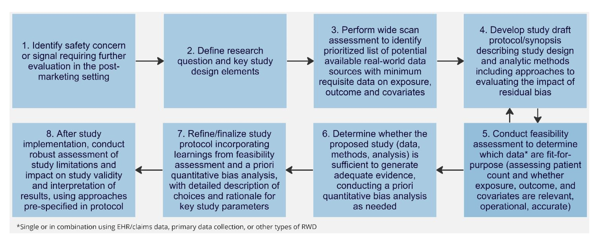

General Principles on Plan, Design and Analysis of Pharmacoepidemiological Studies That Utilize Real-World Data for Safety Assessment of Medicines#
작성자 : 박상호
원자료 : Link
1. Introduction#
1.1 Objectives: 본 문서의 목적은 의약품(약물, 백신 및 기타 생물학적 제제)의 안전성 평가를 위해 목적에 맞는 데이터를 활용하는 관찰적(비중재적) 약물역학 연구의 계획, 설계 및 분석에 관한 일반 원칙에 대해 국제 표준을 권장하고 조화를 촉진하는 것이다. (Claude 3.5 Sonnet New)
1.2 Background
약물역학 연구는 시판 후 안전성 평가의 데이터와 증거의 원천이었음. 안전성에 대한 평가는 다양한 데이터 원천으로부터 행할 수 있음.
규제적 관점에서 증거를 사용하려면 믿을만하고 관련성이 있어야 함
1.3 Scope
이 가이드라인은 RWD를 활용하여 시판 후 약물 제품의 안전성을 평가하는 데 초점이 맞춰져 있음.
RWD만으로는 데이터가 불충분하여 추가적으로 데이터를 수집해야 할 수도 있고, 이 가이드라인은 이러한 상황도 고려함.
다음은 이 가이드라인의 범위를 벗어남
국가 또는 세계 규모의 데이터베이스에서 얻은 자발적인 보고에 따른 약물감시
처치 할당이 수반되는 임상시험
환자가 경험한 데이터 (patient experience data)
2. General principles#
가이드라인에서는 순차적인 절차에 대해 설명하고 있음. (하지만 스터디 설계와 데이터 원천 선택이 반복적(iterative)일 수는 있음)
Research question을 만든다.
Study population, exposure, outcome, covariates(보정변수)를 찾는다.
적절한 평가를 위한 최소한의 데이터 요구사항을 찾는다.
데이터 원천이 Target population (연구하고자 하는 population)을 잘 나타내고 있는지 평가한다.
잠재적인 편향과 confounding을 고려한다.
적절한 데이터 원천과 데이터 수집 방법이 세워진 후에 설계를 더 다듬는 과정을 수반한다. 이는 스터디의 타당도를 다룬다.
이러한 모든 과정이 분명하고 투명해야 한다.
3. Framework for Generating Adequate Evidence using Real-World Data#
Research question이 먼저 세워져야 함
그 이후에 data relevance와 data reliability가 평가되어야 함
적절한 스터디 설계와 분석 방법
연구 한계와 그 한계가 결과 증거의 궁극적인 타당성과 신뢰성 및 결과 해석에 미치는 영향에 대한 정성적/정량적 평가를 실시한다.
프로토콜 개발 단계에서의 실현 가능성 평가와 스터디 시작 후에 프로토콜에 미리 적힌 민감도 분석을 실시하여 증거의 적절성을 평가한다.
웹사이트, 블로그, 소셜미디어, 대화방에서 추출한 사용자가 만든 건강 데이터는 적절하지 않을 수 있으나 가설을 생성하거나 연구의 결과의 맥락을 설명하는 데 사용할 수 있음.

4. Initial Design and Feasibility#
4.1 Research Question#
Research question은 스터디 목적과 가설에 대한 간결한 statement이다.
Research question은 5가지 관점 (PICOT)을 고려하여 만들 수 있다.
Population
Intervention
비중재적 연구에서는 exposure로 간주하기도 한다.
Comparator
Outcome
Timing
Follow-up을 언제까지 할 것인지, 시작 시점을 언제로 할 것인지.
Research question은 문헌을 리뷰하고 knowledge gap을 이해하고, 이전 연구의 강점과 약점을 이해하고, 효과 크기를 파악하고, 중요한 confounder를 파악한 뒤에 만들어져야 한다.
연구자들은 스터디 설계와 데이터 형식에 대한 document를 protocol에 적절하게 제시해야 한다.
연구자들은 target trial 접근이나 estimand 접근을 하여 스터디를 설계하고 추정할 수 있다. 이를 통해 initial design과 feasibility 분석을 할 수 있다.
4.2 Feasibility Assessment#
Feasibility assessment는 처치군의 outcome을 평가하지 않고 연구에 적합한 데이터 원천을 찾는 것이다.
데이터가 가능한지, 충분한지 살펴본다.
후보 데이터 원천에 대해 실현 가능성 평가를 해본다.
Research question과 설계(design) 요소가 만들어지면 연구자들은 연구 질문에 답할 수 있는 필수 설계 요소들을 밝혀야 한다.
population, exposure, comparator, outcome, covariate을 포함하여야 한다.
Outcome을 보기 위한 follow-up 최소 기간을 밝혀야 한다.
목표로 하는 sample size와 event rate와 예상하는 study precision을 밝혀야 한다.
관심 지역을 밝혀야 한다.
실현가능하다면, 헬스케어 시스템 내에서 진단 방법, 선호하는 의학, coverage와 처방 practice에 대한 정보를 밝혀야 한다.
다른 중요한 요소는 다음과 같다.
진단을 위한 코드가 가용한지 (ex : rare disease)
Exposure와 outcome의 타당도를 평가하기 위한 연구실 진단(laboratory confirmation) 또는 진료 기록에의 접근
코딩 알고리즘의 타당도의 증거
데이터를 선택할 때 데이터 원천, 데이터의 최신성, 데이터 refresh 주기, exposure로부터 outcome까지의 follow-up 완결성을 고려하여야 한다.
결측 데이터의 잠재적인 영향에 대해 평가하여야 한다.
흡연 상태의 정보가 결측인 경우에 흡연과 exposure, outcome 사이의 관계를 파악하고, 양적 bias 접근을 하여 예상되는 효과 추정의 범위의 타당도를 평가하여야 한다.
상세한 평가가 완료된 경우에 데이터 원천이 선택될 수 있다.
추가적인 데이터 수집(primary data collection)을 위해서 feasibility assessment를 할 수도 있다.
Comparator group을 선택하는 것은 설계 단계에서 매우 중요하다. 의료 정책이나 보험 정책은 disease severity에 의존하여 행해질 수 있기 때문에 이러한 내용을 고려하여야 한다.
하지만 rare disease의 경우에는 historical or former standard of care comparator가 사용된다.
5. Protocol Development#
약물역학적 안전성 연구의 설계와 수행의 성공을 위해 경험이 많은 다학제적 연구 팀이 필요하다.
프로토콜에 전문가에 대한 설명과 자격에 대해 서술하여야 한다. 이러한 전문성을 통해 다음을 설명하여야 한다.
Exposure의 개발과 outcome과 covariate 정의는 인과 경로를 잘 이해하고 있으며 현업에 있는 임상의학 전문가가 관여하여야 한다.
데이터 수집 방법과 목적에 근거하여 고유한 electronic healthcare data의 특징을 기술하여야 한다.
질병이 기록되는 환경 (coverage 정책 (ICD 등))
데이터 수집과 관련한 특징
데이터 프라이버시와 보안 문제
5.1 Study Design#
약물역학적 안전 연구는 부작용 outcome의 발생을 추정하는 데 관심이 있다.
관심 population에서 살펴보고, exposure와 outcome 사이의 관계를 평가한다.
Study design은 코호트, case-control, self-controlled study 등이 있다.
Comparator의 설정은 다른 약물을 복용하는 사람이나 복용하지 않는 사람, historical control, 과거의 자신이 control이 되는 self-control이 있다.
가장 중요한 고려사항은 exposed 군과 comparator 군의 comparability가 성립해야 한다는 것이다.
연구자들은 특정한 스터디 설계를 한 근거(rationale)를 프로토콜과 final report에 기술하여야 한다.
Graphical representation도 개발하여야 한다(소통을 용이하게 하기 위해).
5.2 Data Sources (데이터 원천)#
Research question에 대하여 데이터가 관련이 있고 믿을만한지 평가하여야 한다. 다음 내용을 프로토콜에 기술하여야 한다.
Patient characteristics, exposures, outcomes
대표할 수 있는 충분한 수의 N수가 있는지
데이터가 정확한지, 완결성이 있는지, 출처를 밝힐 수 있는지, 추적 가능한지
약물역학적 연구를 위해 다양한 데이터 원천의 특징이 고려되어야 한다.
코딩 시스템의 차이, 데이터 요소의 표준화, primary / hospital / speicalty / rehabilitation 등의 care setting 등
Patients, providers, healthcare stystems이 가지고 있는 다양한 동기들(motivations)
최근 RWD 원천의 연합 네트워크가 다양한 지역에서 발달하고 있다.
다양한 데이터 원천을 활용하여 다양한 기관과 데이터 원천이 조화를 이루도록 한다.
이러한 네트워크가 과학적 평가와 규제 의사 결정하는 데 도움을 주도록 설계되었다.
5.2.1 Appropriateness of Data Sources in Addressing Safety Questions of Interest#
위에 나온 내용 반복 (데이터가 study questions를 밝히는 데 적절한지 여러 항목 관점에서 밝혀야 함)
5.2.2 Characteristics of Major Data Sources#
데이터 원천에 관계없이 지리적 위치, 데이터가 생성된 환경, 데이터가 수집된 기간, 나이와 성별과 같은 인구학적인 정보를 밝혀야 한다.
Electornic Health Record (EHR) Data
헬스케어 기관에서 수집하는 데이터이고, 진료 발생 현황을 알려준다. 그러나 환자의 완전한 medical history를 알려주지는 않는다 (다른 헬스케어 시스템을 활용할 수도 있기 때문).
비정형 데이터 (unstructured data)에 중요한 임상 정보가 있을 수도 있다. 예를 들어, 텍스트, 컴퓨터 문서 등
이러한 데이터를 다루기 위해 natural language processing, 이미지 인식을 위한 computer vision 등이 사용될 수 있다.
다양한 기관에서 추출한 EHR 데이터를 사용하는 경우 데이터 형식의 차이, 데이터 코드 등이 조화를 이루어야 하며 접근이 프로토콜에 기술되어야 한다.
EHR은 헬스케어 제공자의 정보가 기록될 수는 있으나 실제 케어가 전달된 것을 기록하지는 않는다.
연계된 약국 정보가 필요할 수 있다.
성 감염병이나 약물 남용 질병, 정신 건강 등에 대한 연구와 같이 특정한 경우에는 분석이 어려울 수 있다.
Claims Data
헬스케어 청구 데이터는 특정한 헬스케어 보험 프로그램에서 보장하는 모든 사람들의 정보를 포함한다.
데이터베이스에 기록하고 서비스를 반영한다.
하지만 다른 데이터 원천과 연결하지 않으면 헬스케어 방문력이나 연구실 검사, 임신 후 출산결과, 백신, 사고로부터의 상해 등을 알 수가 없다.
또한 보험이 보장하지 않는 영역은 알 수 없다.
Registries
Registry는 특정한 질병 또는 조건이나 exposure에 노출된 균일한 population이다.
Patient registry는 특정한 질병 또는 특정한 population에서 정보를 수집한다.
Product registry는 특정한 헬스케어 제품이나 헬스케어 제품군에 노출된 사람들의 정보를 수집한다.
Target population에 대해 registry의 환자가 대표성을 띄는지 고려해야 한다.
지리적인 요인, registry에 포함된 환자 수, 선정가능한 수, 매년 registry에 포함/삭제되는 수 고려
Research question에 답하기 위해 기존 registry의 정보가 불충분하면 다른 데이터 원천과 연계하거나 추가적인 데이터 수집을 할 수 있다.
새로운 registry를 만들어야 할 수도 있다.
Data Collected by Digital Health Technologies (DHT)#
Digital health technologies (DHTs)
컴퓨터 플랫폼, 연결, 소프트웨어, 센서 등을 사용하는 헬스케어 및 헬스케어와 관련된 시스템이다.
의료기기의 일반적인 wellness의 응용에도 쓰인다.
다른 의학 제품 (기기, 약물, 생물학적 제제)의 부속물 등
기술적 발전에 따라 다양한 데이터 원천이 생겨나고 있다.
전통적인 데이터 원천을 보충하거나 안전성 및 효과에 대한 정보를 제공해줄 수 있다.
이러한 기술들은 다른 데이터 원천처럼 목적에 알맞은지(fit-for-purpose) 평가하여야 한다.
Version, software, hardware, manufacturer를 적시하여야 한다.
Federated Data Networks (FDN)
다양한 데이터베이스로부터 나온 데이터와 결과를 결합한다. 이를 분산형 분석이라고 한다.
FDN을 사용할 때에는 다양한 데이터 원천의 특징 차이를 고려하여야 한다. Common data models (CDMs)을 예로 들 수 있다.
FDN의 governance에 대해 고려(중앙형 또는 분산형)하여야 한다.
CDM의 데이터 선정은 intended use에 맞게 선택되어야 한다.
CDM이 주도하는 네트워크는 각 데이터베이스의 원천 정보가 잘 포함되어 있지 않다.
데이터 요소가 모든 연구 목적과 질문을 다루기에는 불충분할 수도 있다.
FDN은 약물 안전성에 대한 질문을 다룰 떄 다음과 같은 장점을 제공할 수 있다.
연구를 하는 데 드는 시간을 줄일 수 있다. 연구의 population의 규모를 키우기 때문에 목표한 sample size를 쉽게 얻을 수 있다.
다양한 기관에서 약물 안전성 문제가 존재하는지 파악할 수 있다. 또한 기관마다의 약물 효과 차이 혹은 공통점을 찾을 수 있다.
처치의 이질성과 활용 패턴을 기관 / 커뮤니티 / 나라마다 파악하여 개개인의 약물 효과를 더 잘 이해할 수 있다.
다양한 나라의 전문가들이 참여하여 약물역학적 연구 결과의 일치성을 높인다.
Data Linkage (데이터 연결)
데이터 연결은 다른 데이터 원천에 접근을 허용하여 개인의 정보에 대한 너비와 깊이를 늘리는 방법이다. 이를 통해 타당도를 높인다.
암이나 사망 registry를 claim이나 EHR과 연결하여 더 좋은 연구를 할 수 있다.
개념적으로 데이터 연결은 데이터 베이스 내에서 행하거나 (엄마 - 유아 연결) 데이터베이스 간에 가능하다 (생명 정보, biobank).
데이터 연결을 할 경우에는 프로토콜에 각 데이터 원천의 정보에 대해 기술하고 연결 방법을 밝혀야 한다.
또한 데이터 연결의 정확성과 완결성에 대하여 기술하여야 한다.
데이터 연결 이후에 추가적인 데이터를 생성한다면 프로토콜에 해당 데이터 수집방법과 연결 방법을 밝혀야 한다.
데이터가 불완전하게 연결되거나 상충되는 데이터가 발견되면 무엇을 할 것인지 적어야 한다.
5.2.3 Data Standardization#
데이터 표준화는 다양한 데이터베이스 연구와 관련되어있다. FDN을 예로 들 수 있다.
원천이 포함하고 있는 정보의 형태 (진단, 시행, 약물 등)
다양한 RWD 원천과 형식의 일치성, 코딩 언어, 원천 데이터의 용어와 관습에 대한 차이 등
헬스케어 시스템의 차이 등
예: 사업적 절차, 지역적 헬스케어 패턴, 데이터베이스 구조, 용어, 코딩 체계, 환자 정보를 지키기 위한 가명화 방법론 등
따라서 코딩 체계를 연계하는 계획에 대해 프로토콜에 기술하여야 한다.
자유형식 텍스트나 비정형 데이터가 존재할 수 있으며 데이터로 활용될 수 있다.
이 데이터로부터 정형 데이터를 만드는 절차는 연구 문건에 설명하여야 한다.
5.2.4 Missing Data (결측 데이터)#
결측 데이터는 데이터 원천에 데이터가 포착되지 않는 경우를 말한다. 두 가지 시나리오가 있다.
첫번째는 데이터 수집을 하려고 했으나 수집하지 못한 경우이다.
두번째는 데이터 수집을 하려고 하지 않아서 수집되지 않은 경우이다.
EHR이나 행정적인 claim은 환자와 헬스케어 체계와 상호작용이 있을 때에만 데이터가 생긴다.
연구실 결과나 처방 기록이 없는 경우는 다음과 같은 이유 때문일 수 있다.
헬스케어 제공자가 처방하지 않은 경우
처방하였으나 실시되지 않은 경우
실시되었으나 결과가 기록되지 않은 경우
헬스케어 상호작용이 있고 결과가 데이터 원천에 기록되었다는 증거가 있으나 데이터가 접근 가능한 형식이 아니거나 데이터 변환 또는 정제 과정에서 소실된 경우
5.2.5 Data Quality (데이터 품질)#
증거 생성 과정에서 각 단계마다 데이터 품질을 결정하는 근본적인 결정(governance와 문서)은 프로토콜이 완성되기 전에 다루어져야 한다.
약물역학적 데이터는 종류에 따라 품질 관리(quality control) 측면에서 기록, 수집, 저장하는 과정이 엄격하지 못할 수 있다.
5.2.6 Data Collection and Data Source Sections in the Study Protocol#
프로토콜은 expousre와 outcome 구분을 위해 사용된 코딩 시스템에 대해 기술하여야 한다.
anatomical therapeutic chemical (ATC), International Classification of Disease (ICD), 데이터 연결을 위해 사용된 방법 등
다양한 데이터 원천과 위치에서 얻은 연구의 경우 연구자들은 다양한 원천 데이터를 어떻게 수집하고 통합할 것인지 언급하여야 한다.
5.3 Target/Study Population#
Target population은 추론을 하고자 하는 인구집단이다.
Study population은 target population을 대표하고자 만든 인구집단이다. 연구 질문에 답하기 위해 데이터로부터 구한다.
Study population은 선정 제외 기준과 다음의 요소들을 통해 정의한다.
선정 시점, lookback period(새로운 환자를 파악하기 위해 washout period를 두는 등)
중요한 변수들 (study population을 결정하는 데 필요한 변수)과 어떻게 타당성을 확보할 것인지
데이터의 선정 제외 기준을 만족하는 데에 있어 완결성과 정확성